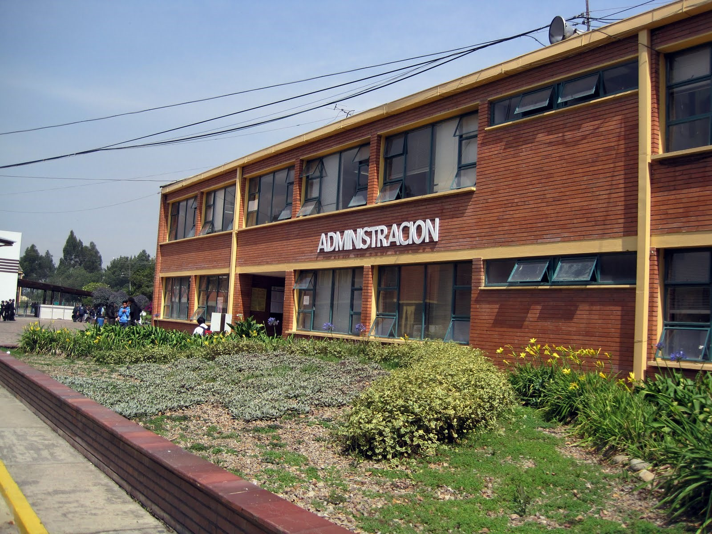

Objetivo
Posicionar al CBA en la region, para que se de a conocer que ademas de manejar el area agricola
tambien se hace manejo de especialidades de las tecnologías que trabajamos igualmente de la gran
diversidad de progamas y oportunidades que ofrece el sena.